Gorgon r2 — punk grade + pad-side 3/4 camera
18 rolls, $1.97. Two experiments out of Dimitri and Jason's Discord thread: (A) how to feed the two r1 keepers to Gemini Flash — both images vs one image + text carrying the other; (B) full 10-model re-gen at the new main camera (front three-quarter from the pad side, pro2k's angle pulled toward front). All prompts add the punk grade, Jason's leg asymmetry (one covered leg, one bare with a studded leather garter) and bulky combat boots. Verdicts below are Claude's fresh-context crop-audit pre-read — Dimitri's call is the gate.
Track B — full re-gen at the new 3/4 angle (text only, 10 models)
One prompt (prompts/r2-B-tq-photoreal.txt): pad-side front three-quarter, punk grade, asymmetric legs + garter, combat boots, plus the r1 systematic fixes (socket banned from the visible temple, stiff-arm pinned as the far arm fully extended into open space, heels down).
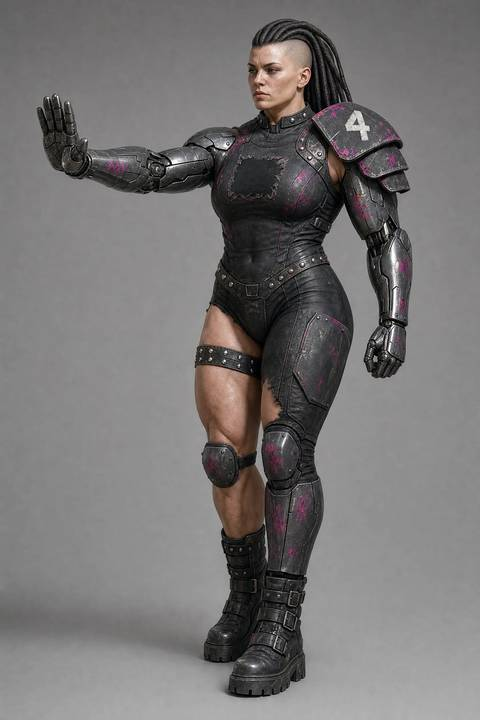
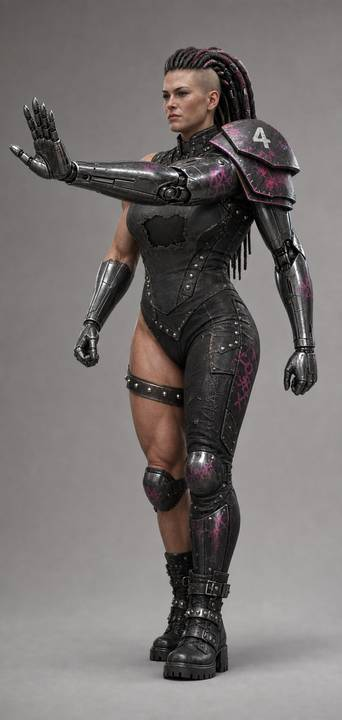
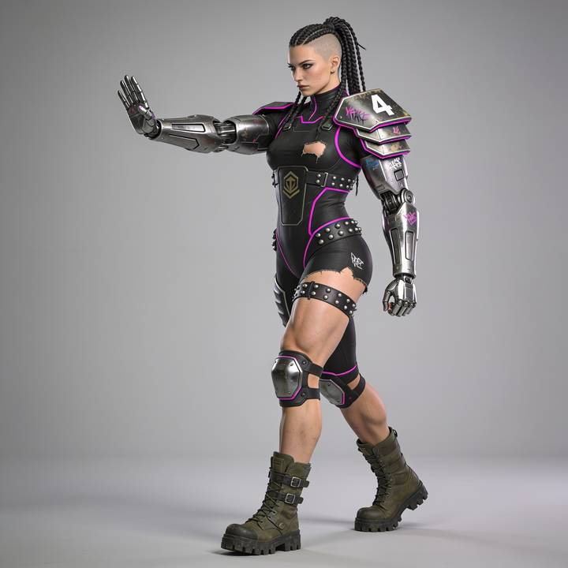
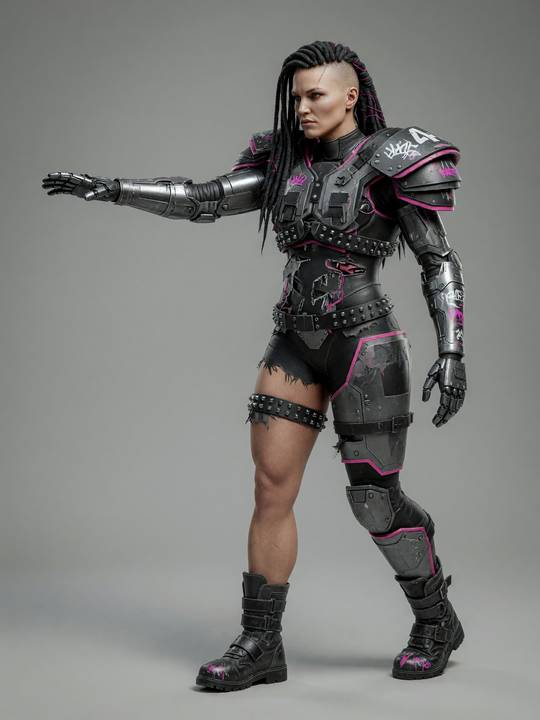
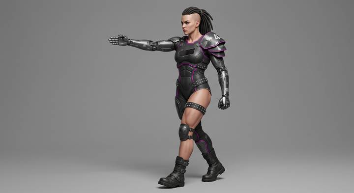
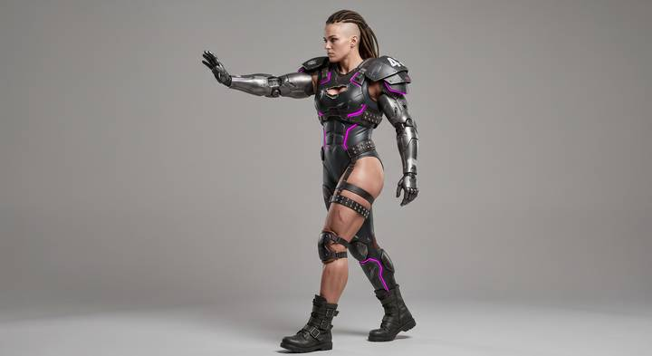
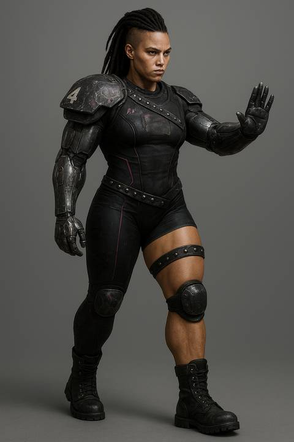
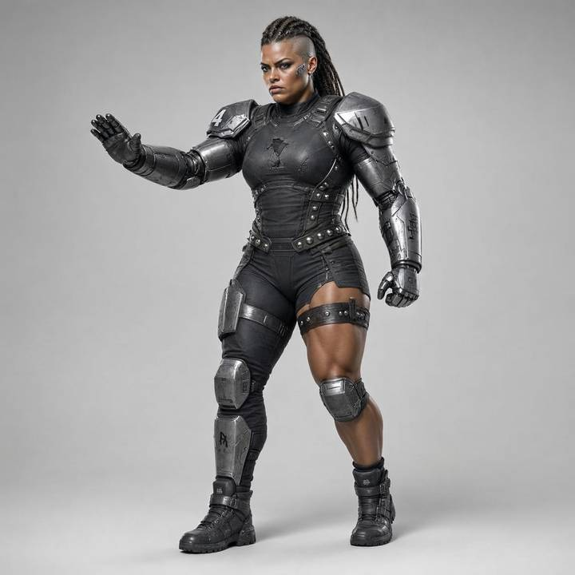
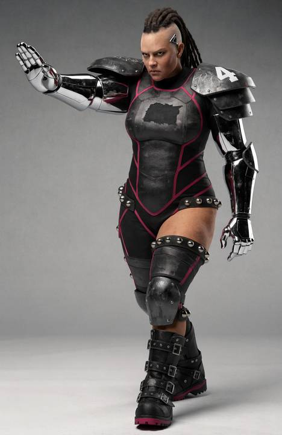
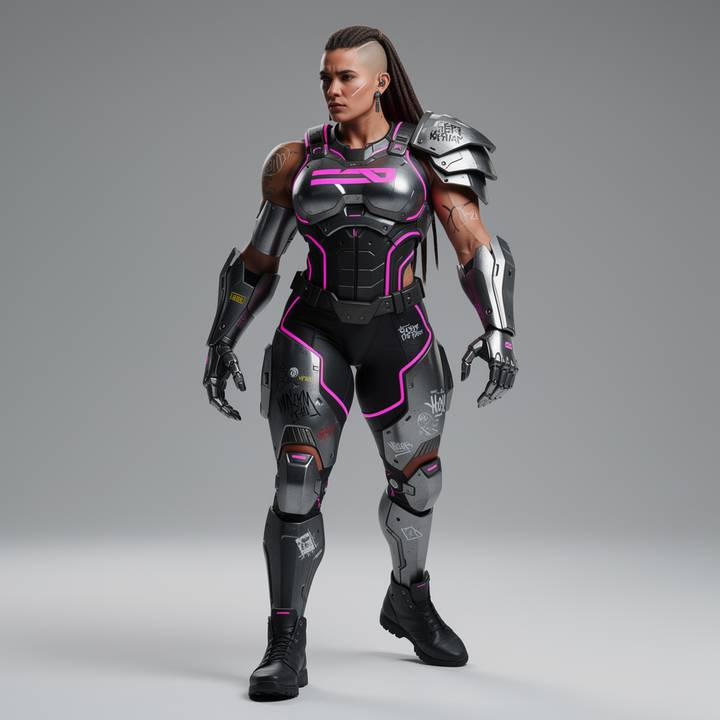
Track A — conditioning experiment: both images vs one + text (img2img)
Same punk/asymmetry/camera deltas in every prompt; what varies is how the two r1 keepers are fed. Result: the arm that fed BOTH keepers transferred the pose 2/2; the one-image arms only achieved ~10–25% of the requested change by text — and no img2img arm rotated the camera meaningfully off its reference. Note both r1 references have a lifted trailing heel, and every flash roll inherited it (6/6) despite explicit heels-down text.
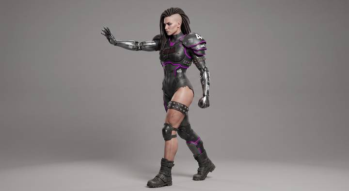
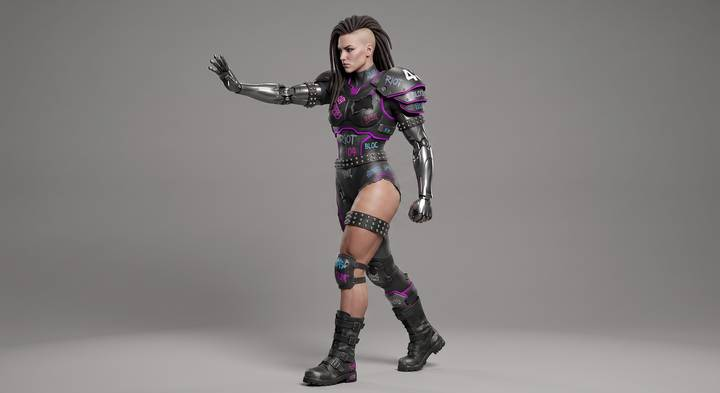
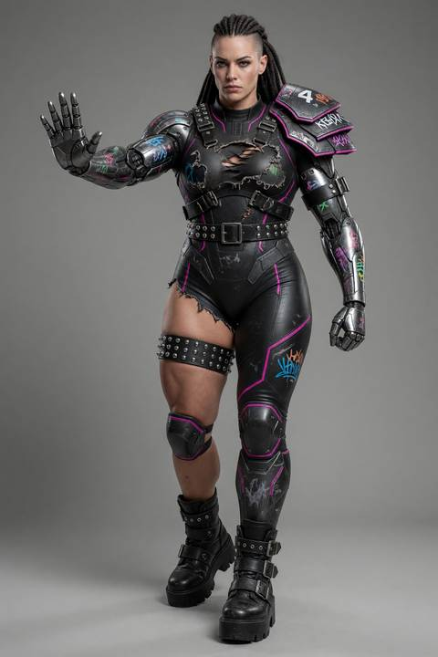
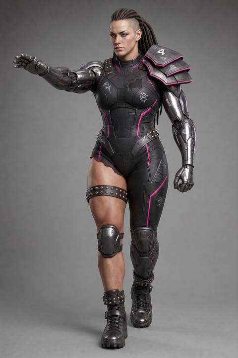
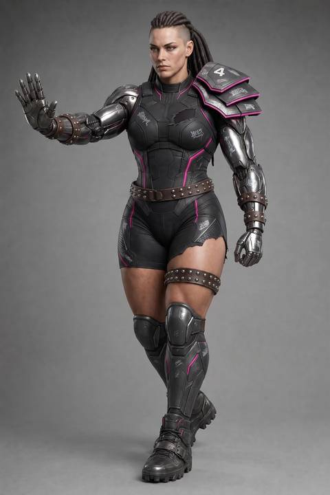
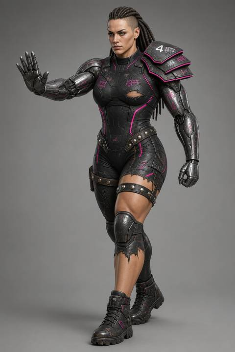
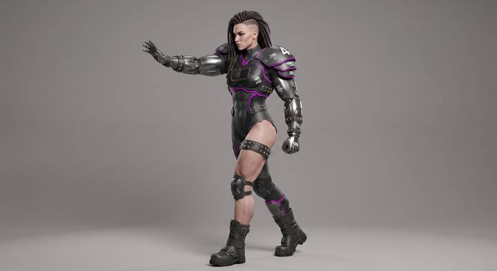
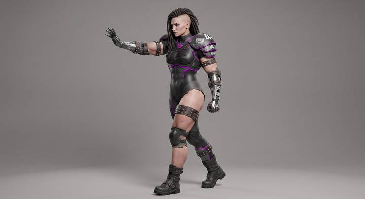